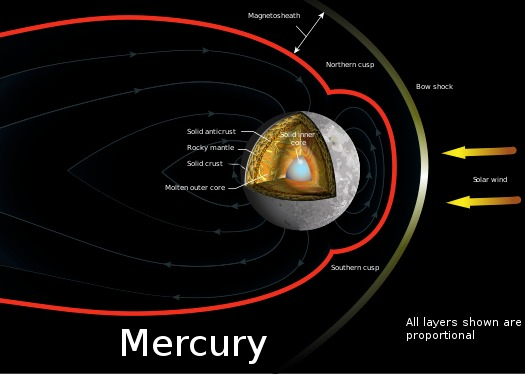

Mercury is the first planet from the Sun and the smallest in the Solar System. It is a terrestrial planet with a heavily cratered surface due to overlapping impact events. These features are well preserved since the planet has no geological activity and an extremely tenuous atmosphere called an exosphere. Despite being the smallest planet in the Solar System with a mean diameter of 4,880 km (3,030 mi), 38% of that of Earth, Mercury is dense enough to have roughly the same surface gravity as Mars. Mercury has a dynamic magnetic field with a strength about 1% of that of Earth's and has no natural satellites..
According to current models, Mercury may have a solid silicate crust and mantle overlying a solid outer core, a deeper liquid core layer, and a solid inner core. Having almost no atmosphere to retain heat, Mercury has surface temperatures that change wildly during the day, ranging from 100 K (−173 °C; −280 °F) at night to 700 K (427 °C; 800 °F) during sunlight across the equator regions.[19] At Mercury's poles there are large reservoirs of water ices that are never exposed to direct sunlight, which has an estimated mass of about 0.025–0.25% the Antarctic ice sheet.[20] There are many competing hypotheses about Mercury's origins and development, some of which incorporate collision with planetesimal and rock vaporization.
Because Mercury is very close to the Sun, the intensity of sunlight on its surface is between 4.59 and 10.61 times the Sun's typical energy received by the Earth: the solar constant. Mercury orbits the Sun in a 3:2 spin–orbit resonance, meaning that relative to the background stars, it rotates on its axis exactly three times for every two revolutions it makes around the Sun.[a][21] Counterintuitively, due to Mercury's slow rotation, an observer on the planet would see only one Mercurian solar day (176 Earth days) every two Mercurian solar years (88 Earth days each).[4] Mercury's axis has the smallest tilt of any of the Solar System's planets, about 1⁄30 of a degree, and its orbital eccentricity is the largest of all known planets in the Solar System.
Nomenclature
The ancients knew Mercury by different names depending on whether it was an evening star or a morning star. By about 350 BC, the ancient Greeks had realized the two stars were one.[22] They knew the planet as Στίλβων Stilbōn, meaning "twinkling", and Ἑρμής Hermēs, for its fleeting motion,[23] a name that is retained in modern Greek (Ερμής Ermis).[24] The Romans named the planet after the swift-footed Roman messenger god, Mercury (Latin Mercurius), whom they equated with the Greek Hermes, because it moves across the sky faster than any other planet.[22][25] The astronomical symbol for Mercury is a stylized version of Hermes' caduceus; a Christian cross was added in the 16th century
Physical characteristics
Mercury is one of four terrestrial planets in the Solar System, which means it is a rocky body like Earth. It is the smallest planet in the Solar System, with an equatorial radius of 2,439.7 kilometres (1,516.0 mi).[4] Mercury is also smaller—albeit more massive—than the largest natural satellites in the Solar System, Ganymede and Titan. Mercury consists of approximately 70% metallic and 30% silicate material.
Internal structure
Mercury appears to have a solid silicate crust and mantle overlying a solid, metallic outer core layer, a deeper liquid core layer, and a solid inner core.[29][30] The composition of the iron-rich core remains uncertain, but it likely contains nickel, silicon and perhaps sulfur and carbon, plus trace amounts of other elements.[31] The planet's density is the second highest in the Solar System at 5.427 g/cm3, only slightly less than Earth's density of 5.515 g/cm3.[4] If the effect of gravitational compression were to be factored out from both planets, the materials of which Mercury is made would be denser than those of Earth, with an uncompressed density of 5.3 g/cm3 versus Earth's 4.4 g/cm3.[32] Mercury's density can be used to infer details of its inner structure. Although Earth's high density results appreciably from gravitational compression, particularly at the core, Mercury is much smaller and its inner regions are not as compressed. Therefore, for it to have such a high density, its core must be large and rich in iron.

The radius of Mercury's core is estimated to be 2,020 ± 30 km (1,255 ± 19 mi), based on interior models constrained to be consistent with a moment of inertia factor of 0.346±0.014.[9][34] Hence, Mercury's core occupies about 57% of its volume; for Earth this proportion is 17%. Research published in 2007 suggests that Mercury has a molten core.[35][36] The mantle-crust layer is in total 420 km (260 mi) thick.[37] Based on data from the Mariner 10 and MESSENGER missions, in addition to Earth-based observation, Mercury's crust is estimated to be 35 km (22 mi) thick.[38][39] However, this model may be an overestimate and the crust could be 26 ± 11 km (16.2 ± 6.8 mi) thick based on an Airy isostacy model.[40] One distinctive feature of Mercury's surface is the presence of numerous narrow ridges, extending up to several hundred kilometers in length. It is thought that these were formed as Mercury's core and mantle cooled and contracted at a time when the crust had already solidified
Surface geology
Mercury's surface is similar in appearance to that of the Moon, showing extensive mare-like plains and heavy cratering, indicating that it has been geologically inactive for billions of years. It is more heterogeneous than the surface of Mars or the Moon, both of which contain significant stretches of similar geology, such as maria and plateaus.[50] Albedo features are areas of markedly different reflectivity, which include impact craters, the resulting ejecta, and ray systems. Larger albedo features correspond to higher reflectivity plains.[51] Mercury has "wrinkle-ridges" (dorsa), Moon-like highlands, mountains (montes), plains (planitiae), escarpments (rupes), and valleys (valles).
The planet's mantle is chemically heterogeneous, suggesting the planet went through a magma ocean phase early in its history. Crystallization of minerals and convective overturn resulted in a layered, chemically heterogeneous crust with large-scale variations in chemical composition observed on the surface. The crust is low in iron but high in sulfur, resulting from the stronger early chemically reducing conditions than is found on other terrestrial planets. The surface is dominated by iron-poor pyroxene and olivine, as represented by enstatite and forsterite, respectively, along with sodium-rich plagioclase and minerals of mixed magnesium, calcium, and iron-sulfide. The less reflective regions of the crust are high in carbon, most likely in the form of graphite.[54][55]
Names for features on Mercury come from a variety of sources and are set according to the IAU planetary nomenclature system. Names coming from people are limited to the deceased. Craters are named for artists, musicians, painters, and authors who have made outstanding or fundamental contributions to their field. Ridges, or dorsa, are named for scientists who have contributed to the study of Mercury. Depressions or fossae are named for works of architecture. Montes are named for the word "hot" in a variety of languages. Plains or planitiae are named for Mercury in various languages. Escarpments or rupēs are named for ships of scientific expeditions. Valleys or valles are named for abandoned cities, towns, or settlements of antiquity.
Impact basins and craters
Mercury was heavily bombarded by comets and asteroids during and shortly following its formation 4.6 billion years ago, as well as during a possibly separate subsequent episode called the Late Heavy Bombardment that ended 3.8 billion years ago.[57] Mercury received impacts over its entire surface during this period of intense crater formation,[53] facilitated by the lack of any atmosphere to slow impactors down.[58] During this time Mercury was volcanically active; basins were filled by magma, producing smooth plains similar to the maria found on the Moon.[59][60] One of the most unusual craters is Apollodorus, or "the Spider", which hosts a series of radiating troughs extending outwards from its impact site.[61]
Craters on Mercury range in diameter from small bowl-shaped cavities to multi-ringed impact basins hundreds of kilometers across. They appear in all states of degradation, from relatively fresh rayed craters to highly degraded crater remnants. Mercurian craters differ subtly from lunar craters in that the area blanketed by their ejecta is much smaller, a consequence of Mercury's stronger surface gravity.[62] According to International Astronomical Union rules, each new crater must be named after an artist who was famous for more than fifty years, and dead for more than three years, before the date the crater is named